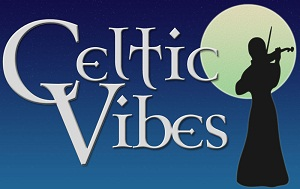
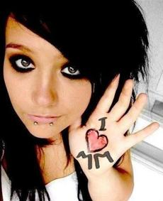

Future
New Bands
The members of The Rossoneri have gone on to form or join new bands.
Celtic Vibes — Jenny and Phil
“Celtic Vibes, Irish and folk music for your party, function or bar in the north-west of England.
With decades of experience, this acoustic 2/3/4 piece lineup will play classic and traditional songs and tunes, including covers from Saw Doctors, Dubliners, Christy Moore and Goats Don't Shave.
We play guitar, violin, flute, bodhrán, whistles, mandolin and harmonica, with multi-part vocal harmonies. All the PA equipment the band needs is included in the booking fee.”
Midnight Mafia — Rob and Nick
“Ten months of hammering out their impressive set was enough to alert Manchester label Affinity to the sights and sounds of Midnight Mafia. The hard working three-piece is the brainchild of singer/songwriter Rob Mager whose musical influences range from Christy Moore and Bob Marley to early Ultravox and Morrissey. While the Mafia’s sound is hard to pin down to one exact style, the lyrics have an undoubtedly local feel and are delivered with a northern sincerity, tinged with just a hint of sarcasm. Tight chord patterns sit comfortably on top of a pounding bassline kept up by ladies' man Mickey Hunt. Drums are expertly adapted for each offering by mid-90s indie veteran, Nick Harris. The result is a feel-good pastiche that has the audience hooked from start to finish. Debut album Too Old For The Disco will be released on Affinity in 2010.”
www.myspace.com/midnightmafiaband